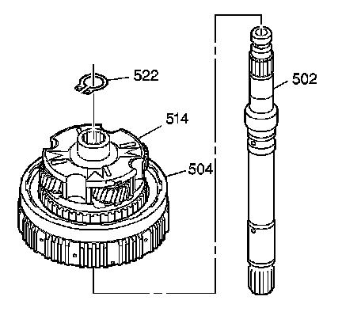
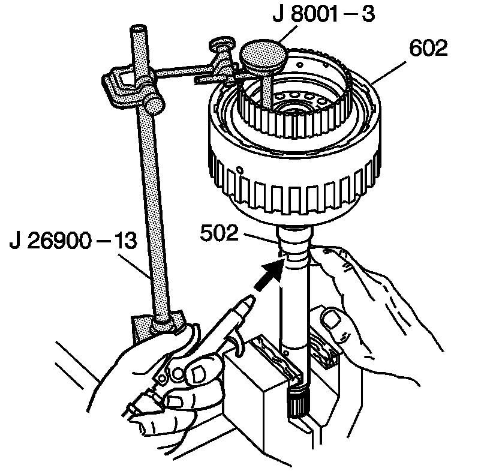

Forward Clutch Piston Travel Check
Forward Clutch Piston Travel Check
Tools Required
^ J 8001 Dial Indicator Set
^ J 26900-13 Magnetic Indicator Base

Important: The turbine shaft (502) is required in order to perform the forward clutch piston travel check.
1. Remove the overdrive carrier retainer ring (522).
2. Remove the turbine shaft (502).

3. Place the turbine shaft (502) in a soft-jawed vice.
4. Install the forward clutch housing assembly (602) onto the turbine shaft (502).
5. Attach the J 8001-3 to the J 26900-13.
6. Place an index finger over one side of the forward clutch fluid passage in the turbine shaft (502).
7. Apply air to the other side of the forward clutch fluid passage in the turbine shaft (502).
The piston travel should be 1.27-4.369 mm (0.050-0.172 in).
8. Remove the tools.
9. Remove the forward clutch housing assembly (602) from the turbine shaft (502).